pan rallado panko (pan rallado japonés) o pan rallado normal
sal
aceite de oliva
PREPARACION
Pelar y limpiar bien los langostinos. Disponerlos en un recipiente para condimentar.
Por arriba colocar 1 cucharada de ajo triturado junto con una pizca de sal, comino y ½ cucharada de pimienta. Mezclar hasta integrar.
En otros recipientes se prepara el rebozado, huevos batidos, pan rallado y harina, a la última se le agrega 1 cucharada de pimienta negra.
Rebozar de a uno los langostinos; harina, huevo y pan rallado.
Poner a calentar aceite en un sartén y luego freír los langostinos rebozados en el aceite bien caliente.
Retirar una vez dorados y esperar a que se enfríe un poco antes de servir
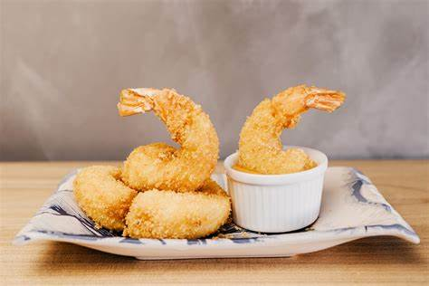
Lomo de cerdo
INGREDIENTES
4 churrascos de lomo, gordos (puede ser otro corte, cuadril por ejemplo, yo no lo hice con lomo esta vez)
1/2 lata de champiñones (o 6 champiñones frescos)
5-6 hongos secos
200 cc. de crema de leche
1 chorrito de vino blanco
1 taza de aceite de oliva
1 diente de ajo
Sal, pimienta y aceite
PREPARACION
Lavar los hongos secos e hidratarlos en agua caliente.
Cortar los champiñones en láminas y los hongos secos, una vez hidratados, cortarlos también en trozos no muy pequeños.
Poner en una olla profunda un chorro de aceite. Cuando esté caliente, agregar el lomo y tapar. Cocer a fuego fuerte, hasta que esté dorado de ambos lados, dándolo vuelta una sola vez. Retirar en un plato. Lo que sigue hay que hacerlo rápido, para que no se seque el lomo ni se enfríe.
En el fondo de cocción del lomo, saltear el diente de ajo, picado. Agregar más aceite si fuera necesario.
Cuando el ajo está apenas dorado, agregar los dos tipos de hongo y saltear unos minutos.
Retirar del fuego e, inmediatamente, poner el chorrito de vino. Es un chorrito muy pequeño, ínfimo. Remover y volver al fuego unos 2 minutos.
Bajar el fuego a mínimo e incorporar la crema de leche. Remover cocinando unos 5 minutos más.
Servir los churrascos y bañar con la salsa. Yo lo acompañé con este Champ: puré de papas irlandés, que le va muy bien.
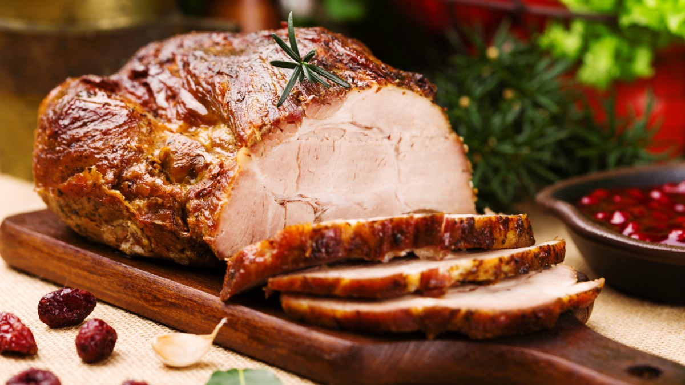
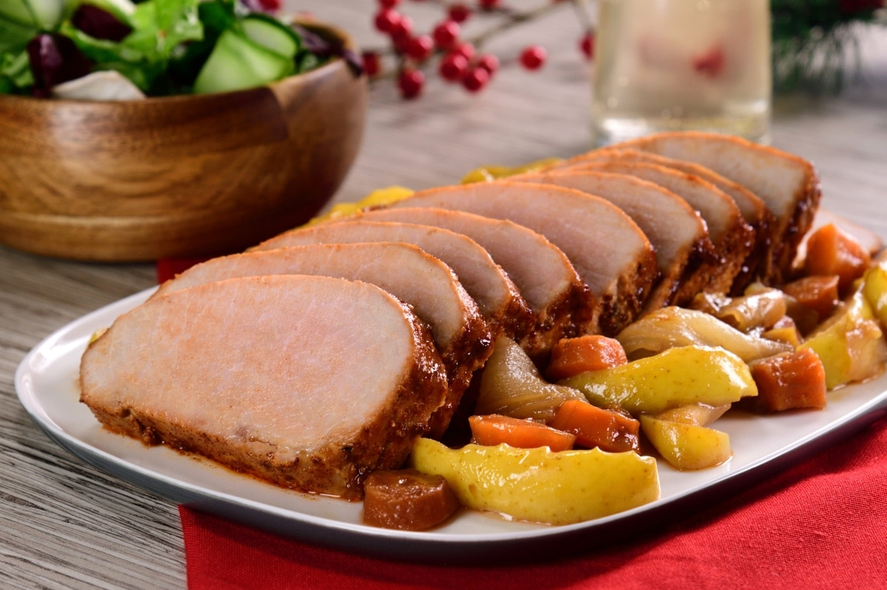
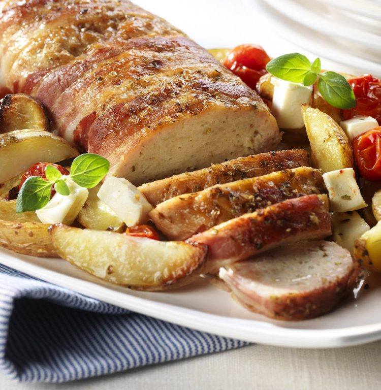
Salmon al horno
INGREDIENTES
2 filetes de salmón
2 dientes de ajo
2 cdas. de miel
1 cda. de salsa de soja
jugo de medio limón
2 rodajas de limón
Perejil
Pimentón dulce
Pimienta
Sal
Aceite de oliva
PREPARACION
Cómo hacer Salmón al Horno en 3 simples pasos
En un plato colocar los filetes del pescado limpio y sin piel. Condimentar con sal, pimiento y pimentón dulce por ambas caras, de forma opcional se puede colocar picante. Rociar con aceite de oliva y reservar.
En otro recipiente colocar la miel, salsa de soja, los dientes de ajo picados y jugo de limón. Remover bien.
Colocar el salmón en una fuente para horno, por arriba agregar la salsa y el perejil picado. Cerrar la fuente con papel aluminio y llevarlo dentro del horno precalentado a 200 ºC. Cocinar por 20 minutos.
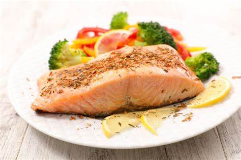
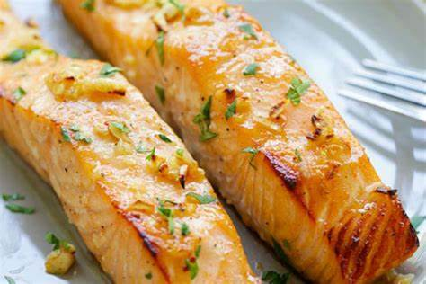
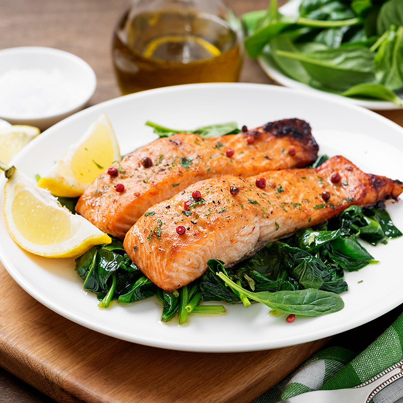
Lomo al Strogonoff
INGREDIENTES
250 gr de lomo de ternera.
1 cebolla mediana.
2100 gr de crema de leche agria.
2 cucharadas de harina.
150 ml. de vino blanco dulce o caldo de gallina.
Sal.
Pimienta.
PREPARACION
En primer lugar cortar el lomo en tiras y condimentar con sal, una cucharada de pimienta y un poco de harina, con las manos remover e integrar todo. Reservar a un costado.
En un sartén al fuego colocar dos cucharadas de manteca y la misma cantidad de aceite vegetal. Esperar a que esto tome temperatura.
Mientras picar la cebolla en tiras y el ajo.
En la sartén ya caliente colocar la cebolla picada y remover a fuego alto. Cocinar la cebolla por 5-10 minutos y luego agregar los trozos de carne. Remover mientras se cocina todo por 5 minutos más. Luego con una espátula retirar la carne y la cebolla dejando parte de la grasa en la sartén.
Luego en la misma sartén saltear el ajo picado y colocar una cucharada de salsa de tomate, remover y sumar una cucharada de harina, continuar removiendo. Por último agregar el vino blanco o caldo de pollo junto con una pizca de pimienta roja. Remover y probar un poco para determinar si necesita un poco más de sal. Continuar la cocción mientras el alcohol se evapora, aproximadamente 10 minutos más.
Por último sumar la carne reservada en un principio y agregar la crema de leche. Mezclar hasta integrar toda la crema y luego apagar el fuego. Esperar 2 o 3 minutos antes de servir.
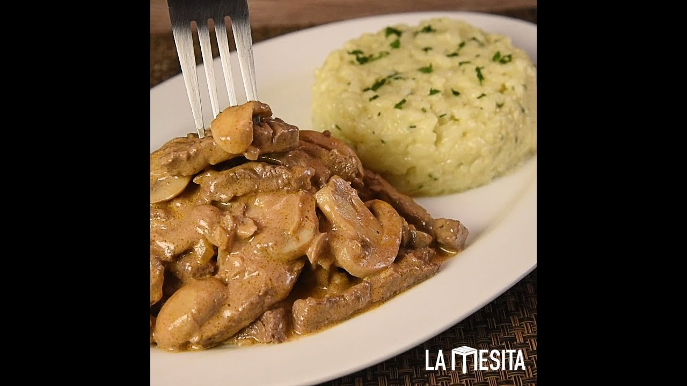
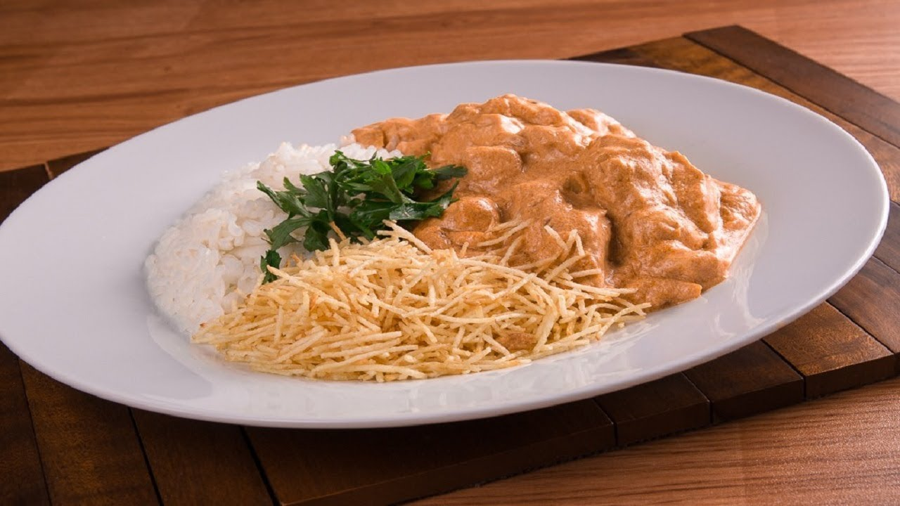
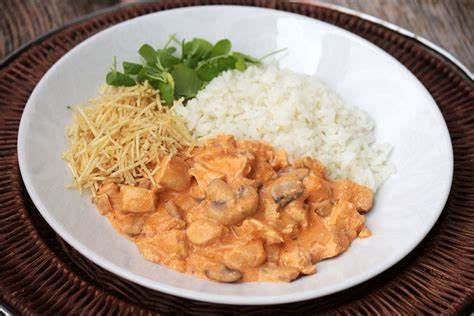
Dulces
Torta Sara
INGREDIENTES
4 Huevos (para el bizcocho genovés)
130 g Azúcar (para el bizcocho genovés)
Sal (para el bizcocho genovés) una pizca
Levadura química (para el bizcocho genovés) 1/2 sobre
Manteca fundida (para el bizcocho genovés) 1 cucharada sopera
130 g Harina (para el bizcocho genovés)
200 g Agua (para el almíbar)
150 g Azúcar (para el almíbar)
Ron (para el almíbar) un chorrito
150 g Azúcar molido (para la crema de mantequilla)
300 g Mantequilla a temperatura ambiente (para la crema de mantequilla)
70 g Leche a temperatura ambiente (para la crema de mantequilla)
200 g Almendra laminada (para la crema de mantequilla)
Cerezas en almíbar (para la crema de mantequilla)
PREPARACION
Empezamos preparando el bizcocho genovés. Precalentamos el horno a 180ºC. Batimos los huevos con el azúcar y la pizca sal, hasta que blanqueen y doblen su volumen. Añadimos la mantequilla, y la harina y la levadura tamizadas con un colador, mezclando con una espátula ralizando movimientos envolventes, hasta que no queden grumos. Echamos la mezcla en dos moldes engrasado, de 20 cm. y horneamos unos 20 minutos. Dejamos enfriar y desmoldamos.
Mientras el bizcocho se hace vamos preparando el almíbar. Ponemos todos los ingredientes en un cazo y lo dejamos hervir unos 5 minutos. Para hacer la crema de mantequilla, batimos con varillas el azúcar glas, mantequilla y leche, hasta que quede una mezcla cremosa, primero batimos a baja velocidad y ya después, unos 3 minutos, a velocidad más alta. Guardamos en la nevera 15 minutos.
Para montar la tarta, cortamos el bizcocho en dos, longitudinalmente, colocamos una capa en la bandeja de servir, empapamos bien con almíbar, cubrimos con una capa de mantequilla, cubrimos con la otra capa de bizcocho, volvemos a empapar con almíbar y cubrimos toda la tarta con el resto de crema. Tostamos las almendras en una sartén y las pegamos sobre la crema de mantequilla. Adornamos con rosetones de crema de mantequilla hechos con manga pastelera y las cerezas confitadas.
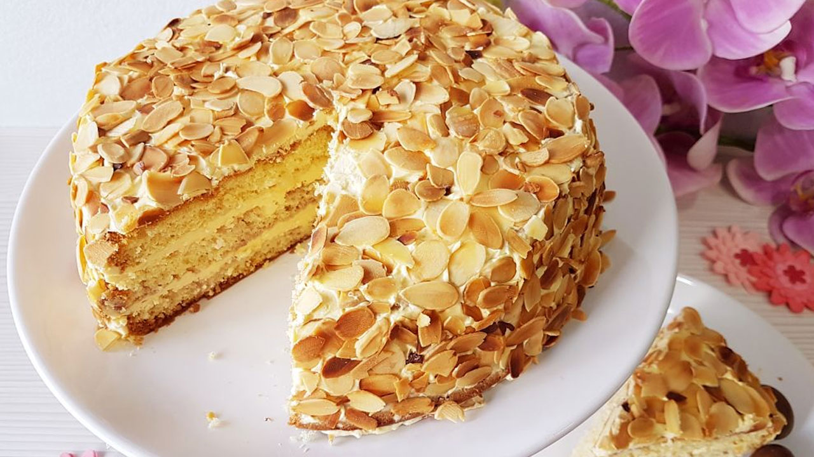
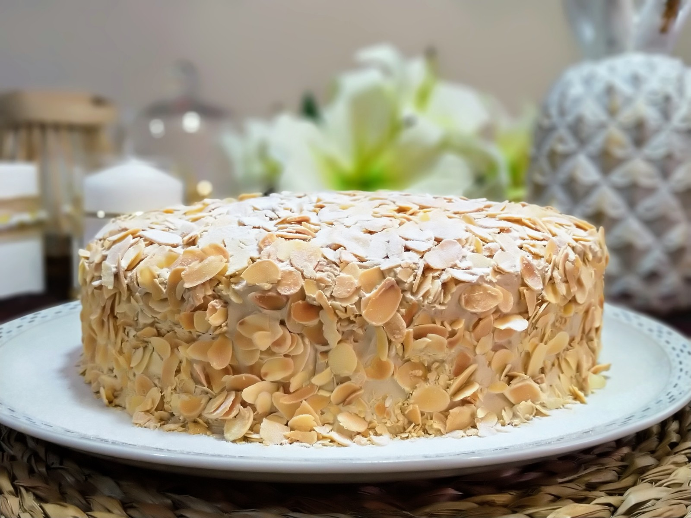
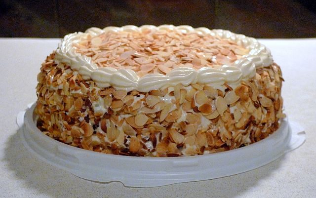
Selva Negra
INGREDIENTES
90 gr. harina
30 gr. de cacao en polvo
300 gr. azúcar
4 huevos
½ cdita. sal
1 l. de crema de leche
35 u. de cerezas
2 cdas. de licor de cereza
100 ml. agua
50 gr. chocolate rallado
Papel manteca
PREPARACION
Preparando el bizcocho de chocolate
Batir las claras de los huevos a punto de nieve y reservar.
En otro bol batir las 4 yemas junto con 120 gr. de azúcar hasta que duplique su volumen inicial logrando una crema espumosa.
Colocar una pizca de sal sobre las claras batidas e incorporar esto a las yemas realizando movimientos envolventes y con mucho cuidado.
Sumar la harina tamizada y el cacao de a partes mientras se mezcla con suavidad.
Preparar un molde para bizcochuelo untando manteca en los bordes y cubriéndolo con papel manteca. Introducir en este la mezcla. Hornear por 25 minutos en un horno precalentado a 180 °C.
Pasado el tiempo, comprobar su cocción pinchando con un cuchillo que debe salir seco. Desmoldar y enfriar bien.
Para hacer el relleno con almíbar y crema chantilly
receta de torta selva negra
En una cacerola calentar el agua junto con 75 gr. de azúcar y las 2 cucharadas de licor de cereza. Cocinar por 5 minutos, mientras ir removiendo para disolver el azúcar.
Apagar el fuego y dejar enfriando.
Mientras se enfría, lavar la fruta. Partir por la mitad 15 cerezas retirándoles el carozo y guardar el resto para decorar al final.
En un recipiente mezclar las cerezas partidas con el almíbar. Remover, colocar la tapa y guardar en frío.
Batir bien la crema de leche fría con 100 gr. de azúcar y reservar.
El armado final de la torta Selva Negra
Cortar el bizcocho en dos o tres partes, como resulte más cómodo.
Colocar la primera capa sobre un plato o bandeja y humedecer un poco con almíbar por la superficie. Por arriba poner la primera capa de crema chantillí, la mitad de las cerezas y cubrir con otra capa de crema.
Repetir esto con las otras capas de bizcocho.
Al terminar esto se continúa con el decorado de la torta: untar crema por toda la superficie de la torta, refrigerar por un rato.
Se puede decorar al gusto de cada uno. Para la decoración tradicional, hacer picos de crema chantillí por los bordes y colocar cerezas en la punta. Luego espolvorear chocolate rallado por arriba.